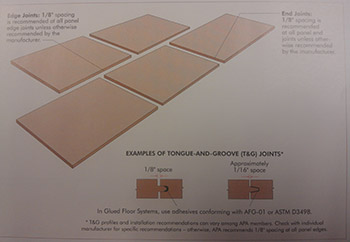

Wood structural panels (plywod and OSB), like all wood products, wille expand or shrink slightly with changes in moisture content. If expansion is prevented by tightly butted panel joists, buckling can occur. And that can mean costly, time-consuming callbacks. To assure best performance, follow these panel spacign and nailing recommentations.
A 10d box nail may be used to guage 1/8-inch spacing between panels. Spacer-type panel edge clips may also be used for roof sheathing applications
Panel spacing is an APA RECOMMENTATION, to provide installers with a means of minimizing the potential for panel buckling; however, it is not an requirement. Some manufacturers may require a space at the time of installation. Panel buckling may be an aesthetic or servicability issue but is not a structural deficiency. There is no reason to expect this recommended space to be maintained when the panel becomes acclimated. Gaps that were initially present may have closed due to normal moisture-related expansion. If the flatness of sheathing or flooring panels is acceptable, APA would generally recommend that any finish flooring, siding or roofing be installed as planned regardless of wheteher gaps are present.
© 2013 APA - The Engineered Wood Association. All Rights Reserved.